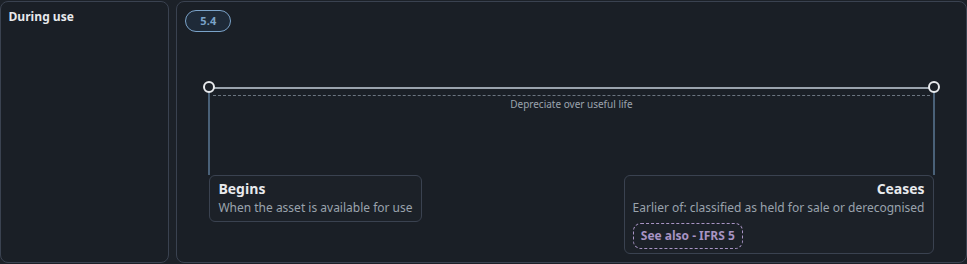
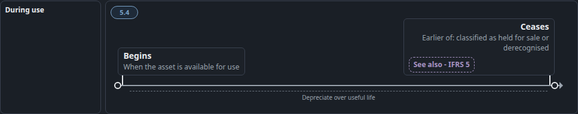
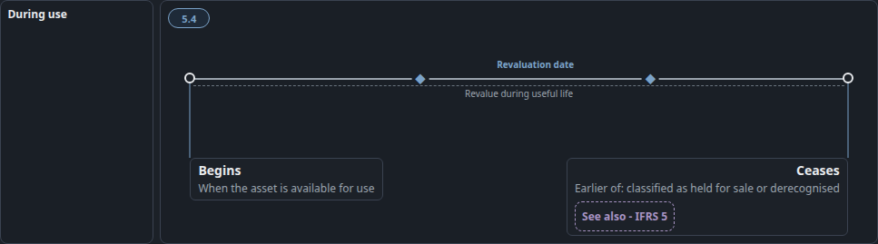
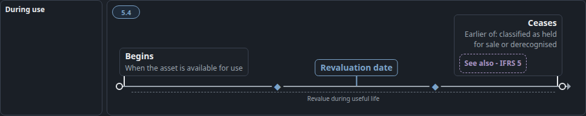

#98 punch6 — flag on the floor, axis is an arrow
Before is punch5. After plants each label on a 2px pole on an arrow axis. Same words. No second band.
Depreciation
BEFORE · punch5. Plain line. Begins and Ceases hang below it.
AFTER · punch6. Arrow axis. Each card stands on a pole planted in its ring. Span「Depreciate over useful life」.
Revaluation
BEFORE · punch5. ◆ on the line, but「Revaluation date」floats above them with no pole.
AFTER · punch6. Same ◆ at 35% and 70%. One flag「Revaluation date」, pole on the axis between them. Span「Revalue during useful life」.